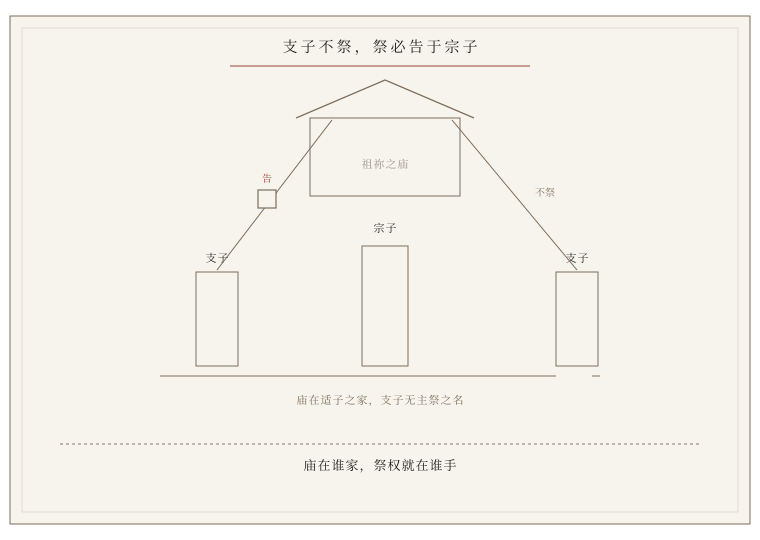

曲礼下 · 二·六十九 · 第 192 课
支子不祭，祭必告于宗子。注「不敢自专，谓宗子有故，支子当摄而祭者也，五宗皆然」。
说什么事：祭的权利在长适一系，旁支只能摄。
落在哪一层：礼，兼及礼制。论宗法在祭上的落点。
为何编在此位：上节论祭牲之等，此节论祭之主。牲有等，主亦有等。
【经】支子不祭，祭必告於宗子。
【注】不敢自專，謂宗子有故，支子當攝而祭者也，五宗皆然。
【疏】支子，庶子也。祖祢庙在适子之家，而庶子贱，不敢辄祭之也。若滥祭亦是淫祀。「祭必告于宗子」者，支子虽不得祭，若宗子有疾，不堪当祭，则庶子代摄可也，犹宜告宗子然后祭，故郑云「不敢自专」。
支子 注疏「庶子也」。非长适。
宗子 承祖祢庙者，长适一系。
告 告于宗子。非请示，是备案。
摄 宗子有故，支子代祭。
五宗 疏「五宗皆然」。大宗一小宗四，皆同此礼。
旁支之子不主祭；若要祭，必须先告于宗子。
一句禁令，一句通融。禁的是「辄祭」，通融的是「摄」。庙在适子之家，祭权随庙走；旁支不是无祭，是无主祭之名。
第一层 庙随适子 疏「祖祢庙在适子之家」。祭权不是抽象的资格，它系在一座具体的房子上。谁家有庙，谁主祭。
第二层 滥祭即淫祀 疏「若滥祭亦是淫祀」。上节「非其所祭而祭之」的话，此处落地：旁支自行主祭，就落在淫祀里。
第三层 摄而不专 注「不敢自专」。宗子有疾不能祭，支子可以代，但须先告。代的是事，不是权。
第四层 五宗皆然 疏一句收束：不止大宗，四个小宗也一样。宗法是一整套，不能只守其一。
与今日何干 代管而不代权：受托办事的人，凡事要留一句「已告」。
| 左 | 右 |
|---|---|
| 支子不祭 | 祖祢庙在适子之家 |
| 祭必告于宗子 | 不敢自专 |
| 宗子有故 | 支子当摄而祭 |
| 摄而必告 | 代事不代权 |
| 滥祭 | 亦是淫祀 |
| 五宗皆然 | 大宗小宗同礼 |
画一座小庙形居左上（一道方墙加一顶），庙下立一枚较高的方牌（示宗子）。庙的右下另立两枚较矮的同形方牌（示支子）。左边那枚矮牌向上引一道细线至庙，线中段画一小方框（示「告」）；右边那枚矮牌向上引一道同形的线，线在近庙处被一道短横截断（示「不祭」之禁）。三牌之下画一道横线作案，案线在右牌处断开一处。不写文字、不画人。赭色只用在左线上那个小方框。
